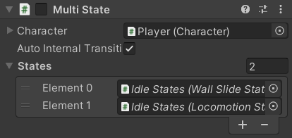
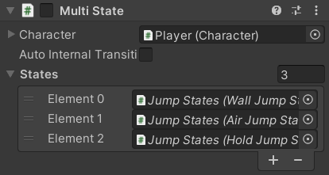

A MultiState contains a list of other states. Attempting to enter the MultiState simply tries to enter each of those other states one by one.
The Player uses this state for their Idle and Jump:
| Idle | Jump |
|---|---|
|  |  |
|
Execution Order
Its DefaultExecutionOrder is set to -1000 so that it runs its FixedUpdate method every frame before other states so that when it changes away from a state, that state's FixedUpdate method doesn't run for that frame.
[DefaultExecutionOrder(DefaultExecutionOrder)]
public class MultiState : CharacterState
{
public const int DefaultExecutionOrder = -1000;
Fields
The field tooltips explain what they each do:
[SerializeField]
[Tooltip("While in one of the States, should it try to enter them again in order every " + nameof(FixedUpdate) + "?")]
private bool _AutoInternalTransitions;
[SerializeField]
[Tooltip("The other states that this one will try to enter in order")]
private CharacterState[] _States;
public CharacterState[] States => _States;
_AutoInternalTransitionsis explained in the Internal Transitions section.- The
_Statesfield is declared after_AutoInternalTransitionsbecause it looks a bit more organized to have the variable-size array show up at the end of the Inspector after all the single line fields.
State Life Cycle
CanEnterState simply passes the _States to the StateMachine which will check the CanEnterState property on each of them:
public override bool CanEnterState => Character.StateMachine.CanSetState(_States);
CanExitState always returns true because once the MultiState has chosen a sub-state, that state's CanExitState will be used instead:
public override bool CanExitState => true;
When the character actually enters this state, it again passes the _States to the StateMachine to attempt to enter each of them until one is successful. If _AutoInternalTransitions is enabled, it also stores the state that was entered and enables this MultiState component so that its FixedUpdate will get called.
private CharacterState _CurrentState;
public override void OnEnterState()
{
if (Character.StateMachine.TrySetState(_States))
{
if (_AutoInternalTransitions)
{
_CurrentState = Character.StateMachine.CurrentState;
enabled = true;
}
}
If it fails to enter any of the states, it logs an error message listing all of them because a MultiState is not supposed to actually be the current state:
else
{
var text = ObjectPool.AcquireStringBuilder()
.AppendLine($"{nameof(MultiState)} failed to enter any of its {nameof(States)}:");
for (int i = 0; i < _States.Length; i++)
{
text.Append(" [")
.Append(i)
.Append("] ")
.AppendLine(_States[i].ToString());
}
Debug.LogError(text.ReleaseToString(), this);
}
}
This means a state like IdleState, MobileIdleState, or LocomotionState should always be the last one in the States array because they don't have any restrictions on when they are allowed to be entered.
Most states are enabled on entry and disabled again on exit so that their FixedUpdate and similar methods only get called while the character is in that state (this comes from the base State Behaviour which the base CharacterState inherits from). But a MultiState needs to enter a different state and still have its FixedUpdate method called while that other state is active so its OnEnterState method (see above) doesn't call base.OnEnterState(); and it also overrides OnExitState to not call base.OnExitState(); either:
public override void OnExitState() { }
Internal Transitions
If this component was enabled (by OnEnterState dur to _AutoInternalTransitions being enabled), it uses FixedUpdate to first disable itself if the character is no longer in the sub-state it entered:
protected virtual void FixedUpdate()
{
if (_CurrentState != Character.StateMachine.CurrentState)
{
enabled = false;
return;
}
Otherwise, it simply checks through its states every frame to see if any of them can be entered:
var newState = Character.StateMachine.CanSetState(_States);
if (_CurrentState != newState && newState != null)
{
_CurrentState = newState;
Character.StateMachine.ForceSetState(newState);
}
}
}
Since this state is assigned as the Character.Idle for the Player, it means that whenever they return to their default state (such as when finishing an attack) it will immediately check whether they can Wall Slide rather than always entering the Locomotion State first. It also avoids putting too much responsibility in a single component, which is what would happen if WallSlideState inherited from LocomotionState.
The MultiState used for the Player's Jumps on the other hand has _AutoInternalTransitions disabled so pressing the jump button simply attempts to activate any of the jump states then allows that state to execute normally.